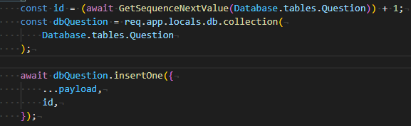

# [MongoDB] 如何 Auto increment 地插入資料
眾所周知，在 mongodb 中對於 ID 的保存方式，並不像 SQL 那樣可以設定 auto increment 有序地設置流水號作為 unique key。取而代之的是，每一筆資料都會有獨自的 _id 以確保每筆資料的唯一性。
而在 mongodb 中，我們無法「直接地」設定 collection 中的 entry 的某個 attribute 具有 auto increment 的特性。
但是在許多場合我們卻依然會有這樣的需求，該怎麼辦呢？
我們需要自己在程式中手動實作這樣的功能。
雖說是自己實作，但其實也沒有很複雜。
主要思路如下
設計一個 autoIncrease collection 專門 maintain 需要 auto increment 的 collection 其當前的 auto increment number。未來當某 collection 需要 auto increment 時，就來 autoIncrease collection 拿取 lastest Id.
以 NodeJs 為例
實作一個 function ，專門獲取 lastest Id，並在每次獲取的同時更新 lastest Id.
const get_auto_increment_id = async (table_name) => { | |
// 寫死 autoIncrease 為紀錄各個 document 的 auto increment 的 document. | |
const auto_increment_record_table = 'autoIncrease'; | |
// 連接 mongodb | |
const db = await CreateDB(process.env.MONGO_DB); | |
// 獲取此 collection | |
const db_collection = db.collection('autoIncrease'); | |
const dbFindOneAndUpdateAsync = promisify( | |
db_collection.findOneAndUpdate | |
).bind(db_collection); | |
// 先 update 此 table_name 的 last number + 1 | |
const result = await dbFindOneAndUpdateAsync( | |
{ _id: tableName }, | |
{ $inc: { seqValue: 1 } }, | |
{ upsert: true, returnNewDocument: true } | |
); | |
const seqDoc = result.value; | |
// 再回傳最新的 last number | |
return seqDoc ? seqDoc.seqValue : 0; | |
}; |
未來我們便可以使用這個 function 取得 collection 中最新的 id。如此就可以用程式達到手動 auto increment 的功效了。
以下是我在自己專案中使用的 handle function，當我插入一筆 Question 資料到 mongodb 前，我便讓 table 的 id+1，作為此筆資料的 id。

如此便完成 mongodb 的 auto increment 了。